1011 최종 확인
2페이지 전체 제외. 13:29 최신 원본 25쪽을 직접 확인했습니다. 13·23·25쪽 마무리와 16–19쪽 데이터 확인이 남았습니다.
6·7·9·11·17·18·20·21·22쪽의 문구 수정은 반영됐습니다. 24쪽 필수 수정은 없습니다.
전체 검토 결과와 웹 수정 기록 · 수정한 로컬 웹
01 · 유지

분야·담당·대표 경험이 명확하고 제목과 설명이 페이지 안에 들어옵니다.
03 · 유지 · 선택 보완

대표 4개 사례의 순서와 페이지 번호는 정확합니다. 추가 경험 24·25쪽과 연락처 26쪽은 목차에 없습니다.
작업: 목차를 전체 페이지 안내로 쓰려면 추가 경험 24 · 모바일 인트라넷 / 25 · 개인 칸반 / 26 · 연락처 한 줄을 추가합니다. 대표 사례만 소개하는 목차로 유지해도 됩니다.
04 · 유지
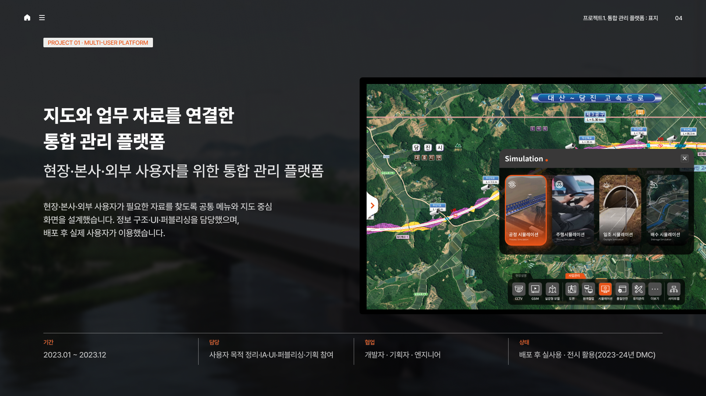
역할·기간·협업·배포 후 실사용 설명이 일치합니다. 큰 화면의 가장자리는 연출상 잘리지만 상세 화면은 뒤에서 확인됩니다.
05 · 유지

기존 업무, 세 사용자군의 목적, 설계 과제가 연결됩니다.
06 · 수정 반영 · 유지
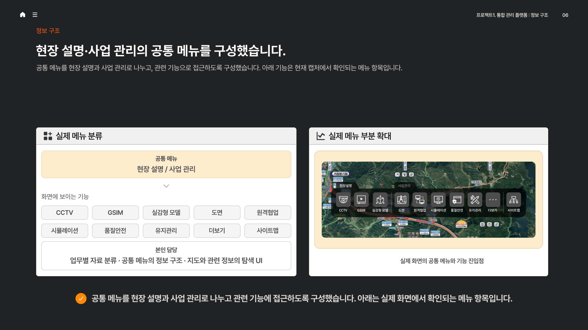
제목 잘림과 오른쪽 편집 메모가 해결됐습니다. 캡션이 실제 화면의 공통 메뉴와 기능 진입점으로 바뀌었습니다.
작업: 하단 요약은 상단 설명과 반복되지만 내용 오류는 아니므로 추가 수정은 선택입니다.
07 · 수정 반영 · 유지
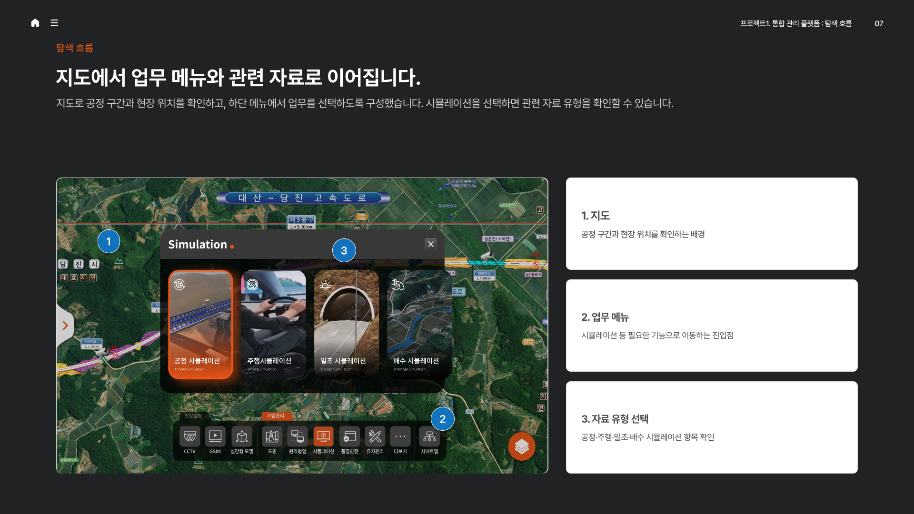
1 지도 / 2 업무 메뉴 / 3 자료 유형 선택으로 설명 번호와 화면이 대응합니다. 웹 자료도 이 버전으로 교체했습니다.
08 · 유지
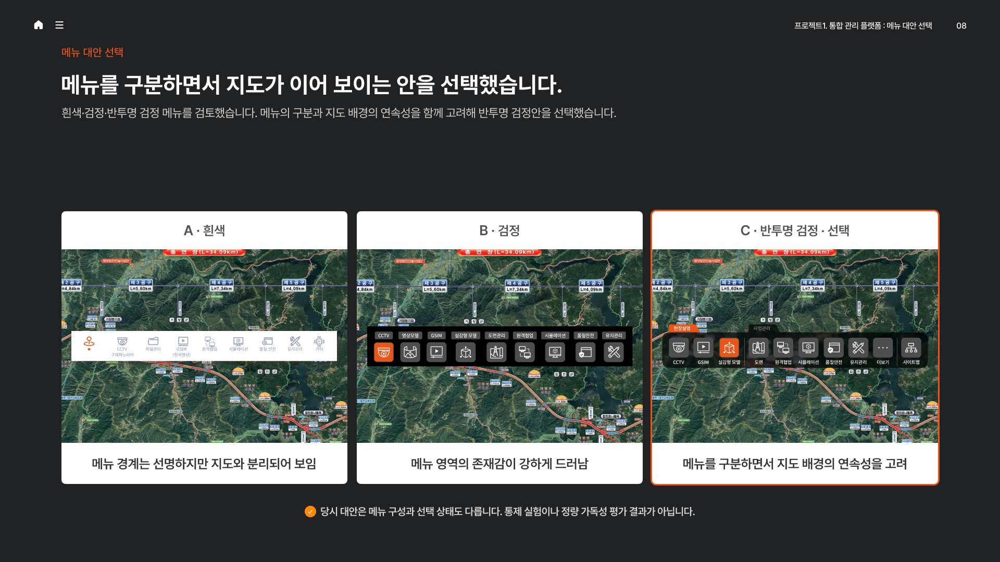
세 메뉴 대안과 선택 이유가 일치하고 정량 평가가 아니라는 비교 범위도 명확합니다.
09 · 수정 반영 · 유지
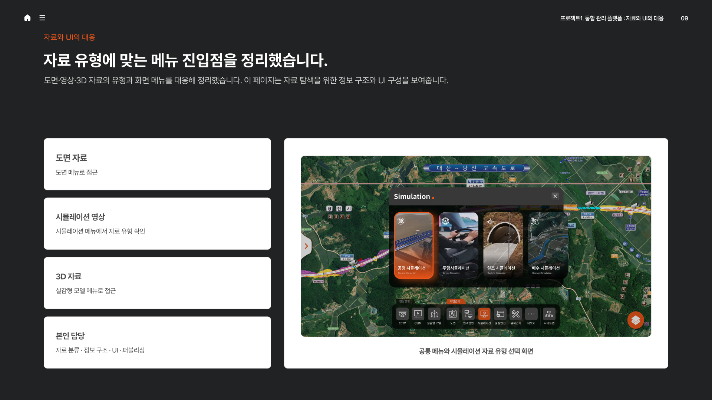
검색창 오복사 캡션이 공통 메뉴와 시뮬레이션 자료 유형 선택 화면으로 교체됐습니다.
10 · 유지

본인 산출물·실제 활용·협업이 구분됩니다. 85.6점이 과제 종합 평가라는 범위도 밝혔습니다.
11 · 수정 반영 · 유지
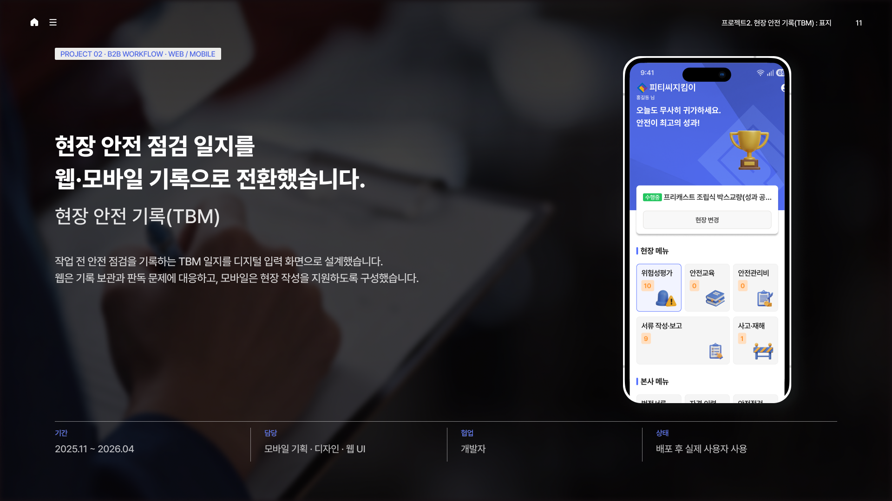
B2B WORKFLOW · WEB / MOBILE로 분류가 정리됐고 기간·담당·실사용 상태가 일치합니다.
12 · 수정 반영 · 유지
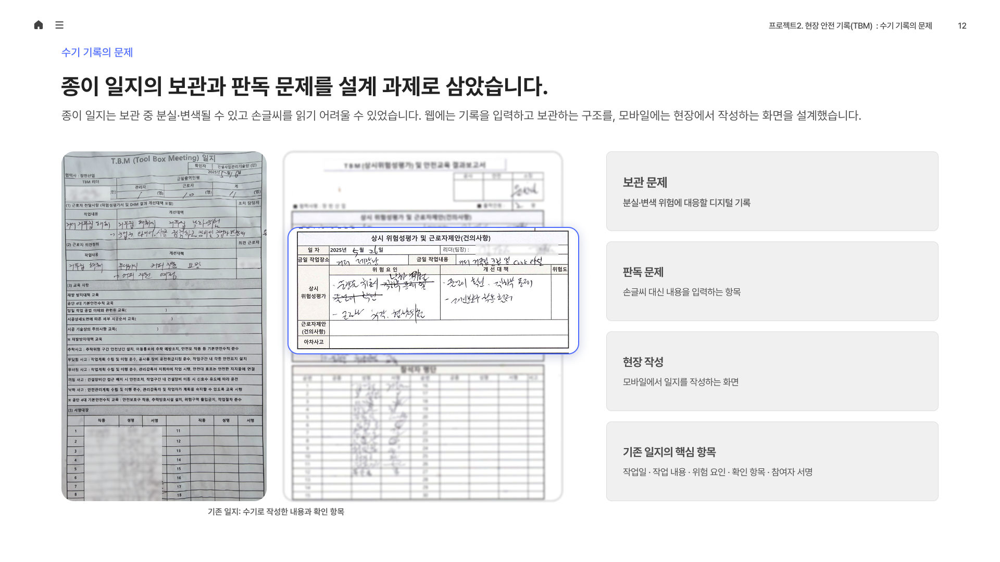
종이 일지의 참여자 이름·서명 영역이 흐림 처리됐고 핵심 항목 설명이 추가됐습니다. 회사명과 일부 현장 문구는 남아 있습니다.
작업: 기업·현장 정보를 공개할 수 없는 자료라면 그 부분도 가립니다. 자료 사용 허용 여부를 이미지로 확인한 것은 아닙니다.
13 · 수정 필요 · 날짜 관계 확인
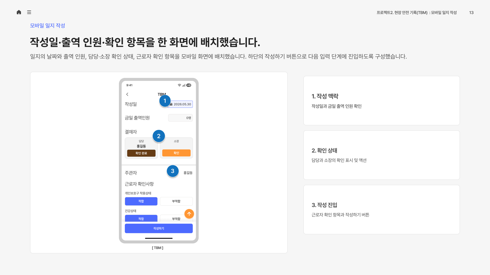
화면 안에 결제자가 그대로 남았습니다. 작성일은 2026.05.30으로 바뀌었고 표지 작업기간은 2025.11–2026.04입니다.
작업: UI 원본에서 결제자 → 결재자로 수정 후 재캡처합니다. 날짜가 배포 후 운영 화면이라면 확인 후 배포 후 운영 화면이라고 캡션을 추가합니다. 예시 날짜라면 예시임을 밝히거나 실제 확인한 날짜를 사용합니다. 화면 날짜를 작업기간에 억지로 맞추거나 작업기간을 임의로 늘리지 않습니다.
14 · 유지 · 선택 보완
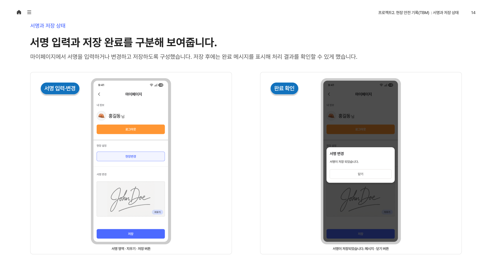
서명 입력과 저장 완료가 구분되고 이름·서명은 홍길동·John Doe 예시로 보입니다.
작업: 팝업의 서명이 저장 되었습니다. → 서명이 저장되었습니다. 띄어쓰기를 정리하면 됩니다. 하단 캡션은 이미 수정됐습니다.
15 · 유지
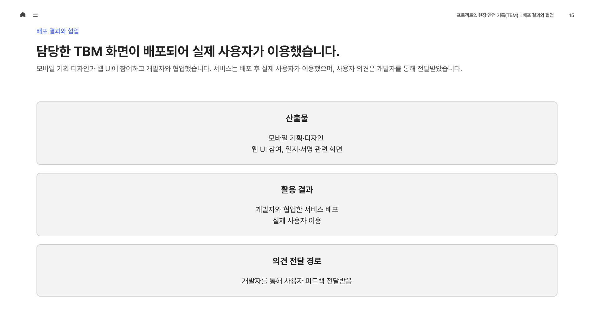
담당·배포 후 실사용·개발자를 통한 의견 전달 경로가 명확합니다.
16 · 유지 · 화면 데이터 확인
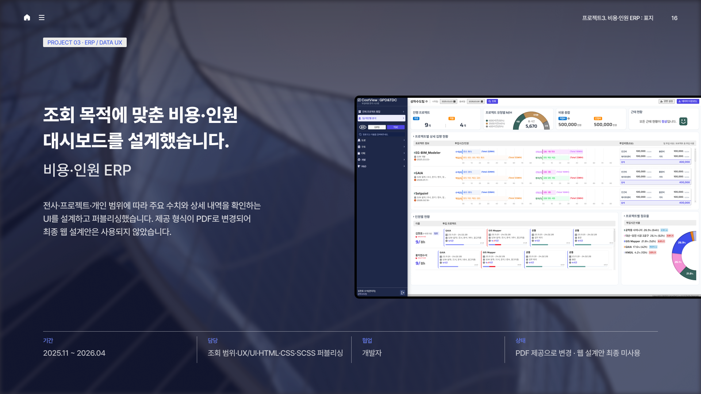
웹 설계안 최종 미사용과 작업기간이 명확합니다. 대시보드에 이름·투입 시간·근로 상태가 남아 있습니다.
작업: 실제 직원 정보면 이름과 연결된 근로 데이터를 익명화합니다. 가상 시연 데이터라면 그 사실을 표시합니다. 현재 이미지만으로 실제·가상을 확정하지 않았습니다.
17 · 문구 수정 반영 · 화면 데이터 확인
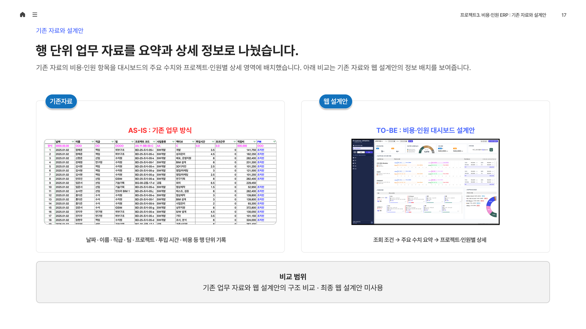
TO-BE가 비용·인원 대시보드 설계안으로 바뀌어 미사용 상태와 일치합니다. 왼쪽 원장의 이름·PM 열과 업무·시간·비용은 그대로 보입니다.
작업: 실제 직원 자료면 원장의 이름·PM 열을 제거하거나 익명화한 시연 원장으로 교체하고 연결되는 상세 데이터도 확인합니다. 가상 자료라면 시연 데이터임을 명시합니다.
18 · 문구 수정 반영 · 화면 데이터 확인
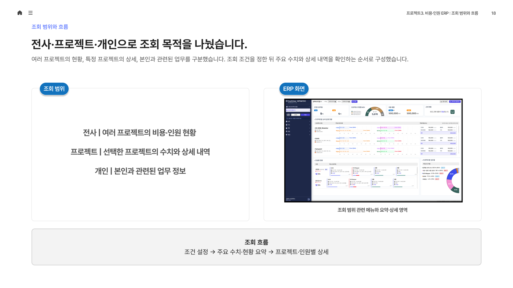
캡션이 조회 범위 관련 메뉴와 요약·상세 영역으로 좁혀졌고 조회 흐름은 일치합니다.
작업: 16·17·19쪽과 같은 대시보드이므로 직원 이름·근로 데이터 처리를 함께 적용합니다. 메뉴 확대는 선택 보완입니다.
19 · 수치 설명 반영 · 화면 데이터 확인
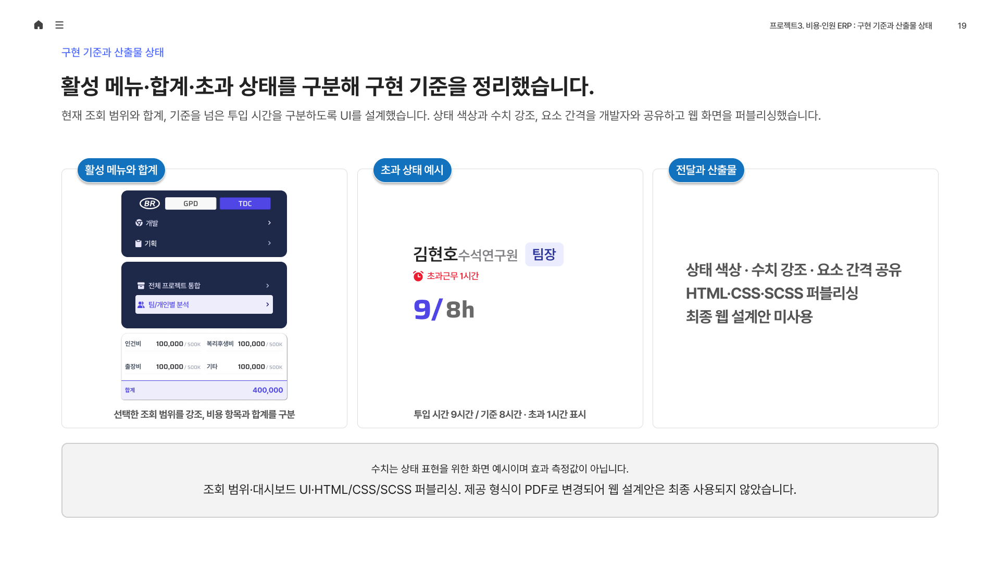
투입 9시간 / 기준 8시간 · 초과 1시간 설명은 반영됐습니다. 상태 예시가 효과 측정값이 아니라는 범위도 명확합니다. 인물 이름은 남아 있습니다.
작업: 실제 직원 이름이면 익명화하고 재캡처합니다. 가상 인물이면 예시 인물·시연 데이터라고 표시합니다.
20 · 수정 반영 · 유지
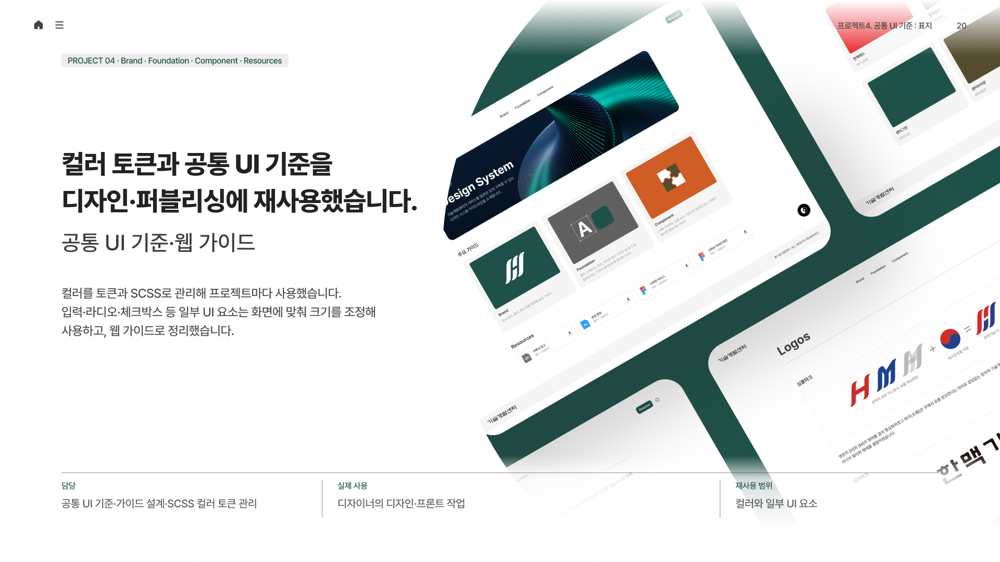
공통 UI 기준·웹 가이드 명칭으로 정리됐고 실제 사용 범위가 디자이너의 디자인·프론트 작업, 컬러와 일부 UI 요소로 구분됩니다.
21 · 수정 반영 · 유지
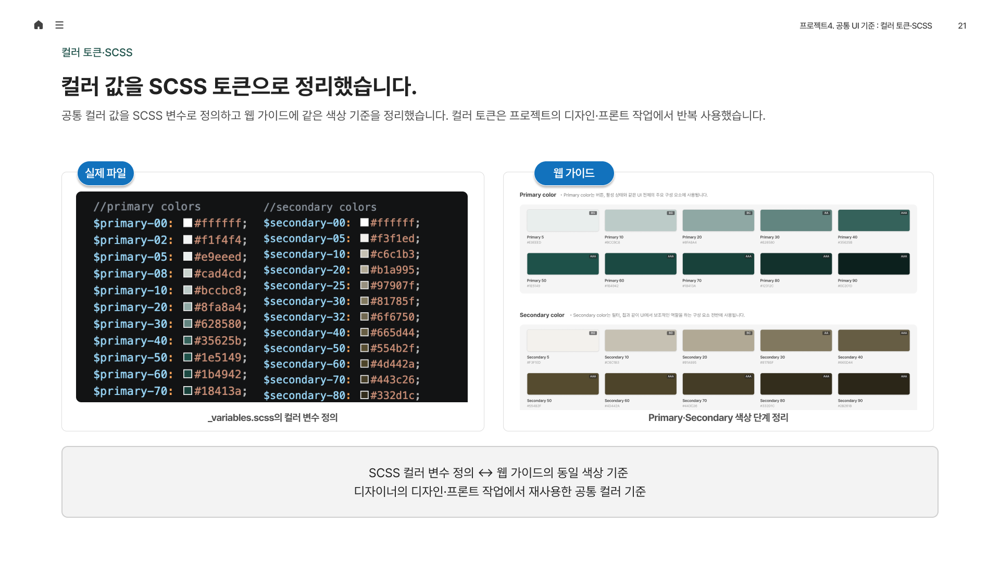
하단이 SCSS 컬러 변수 정의 ↔ 웹 가이드의 동일 색상 기준으로 바뀌어 실제 제시한 자료와 일치합니다. 웹 이미지도 갱신했습니다.
22 · 수정 반영 · 유지
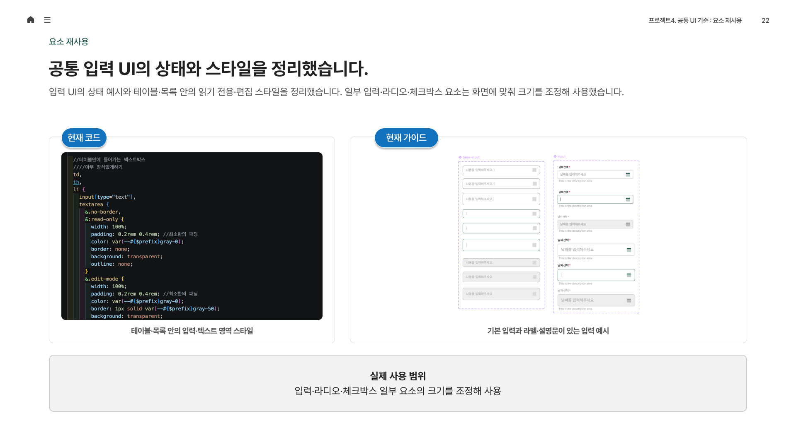
설명문이 완성된 문장으로 바뀌고 오른쪽 중복 코드가 제거됐습니다. 입력 가이드가 전체 프레임에 들어오며 코드·가이드 역할이 구분됩니다. 웹은 설명도 대신 이 실제 자료로 교체했습니다.
작업: 오른쪽 입력 예시를 더 크게 보여주는 배치 조정은 선택입니다. 필수 수정은 해결됐습니다.
23 · 일부 반영 · 수정 필요
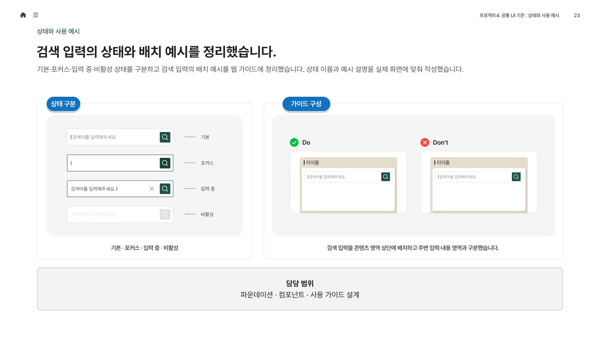
왼쪽 네 상태 이름은 한글로 수정됐고 반복 설명은 제거됐습니다. 오른쪽 Do / Don’t는 여전히 차이를 설명하지 않은 비슷한 두 화면으로 남았습니다.
작업: 오른쪽 카드 안에서 Do / Don’t 비교를 없애고 왼쪽 배치 예시 하나만 남깁니다. 제목: 검색 입력 배치 예시. 현재 하단 설명은 한 번만 유지합니다. 실제 비교를 유지하려면 무엇이 권장·비권장인지 화면 차이와 각 설명이 필요합니다. 웹은 이미 네 상태와 단일 배치 설명도를 사용합니다.
24 · 유지
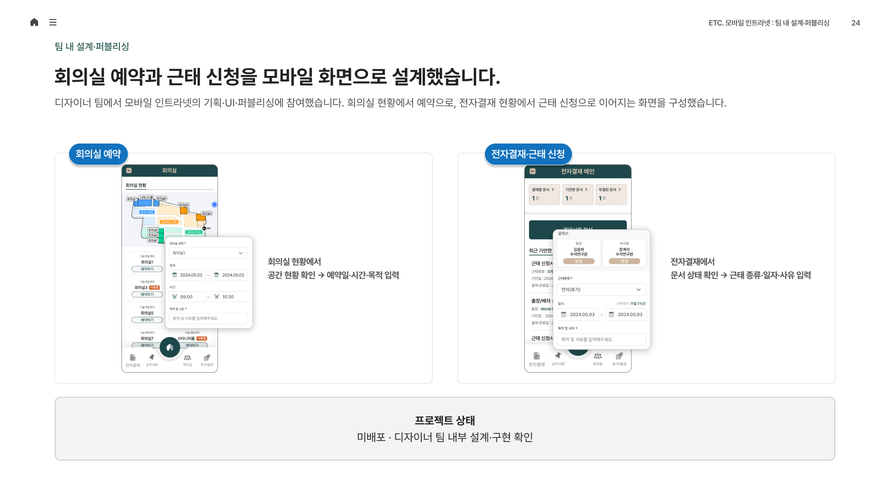
팀 참여·회의실 예약·근태 신청·미배포·팀 내부 확인이 명확합니다. 이전 빨간 표시도 선택 보완이며 필수 수정이 아니었습니다.
25 · 수정 필요 · 실제 앱 재캡처
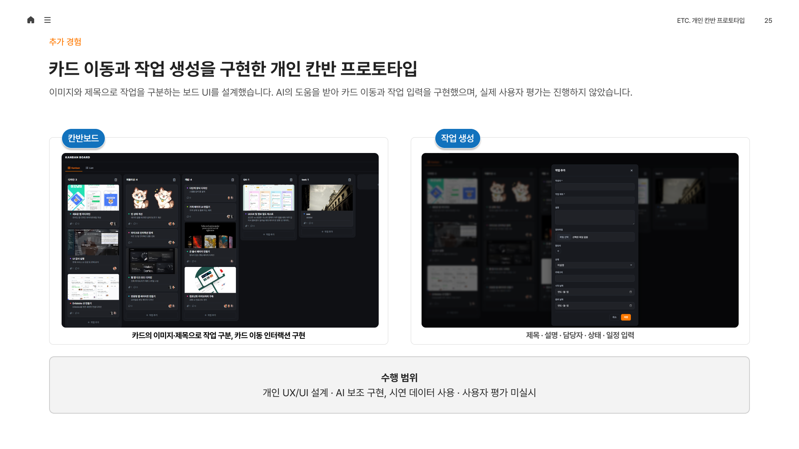
이미지는 이전과 동일합니다. 보드에 test:1 컬럼과 sss·ddddd가 남아 있고 오른쪽 생성 화면의 제목·설명은 비어 있습니다.
작업: 실제 앱에서 테스트 컬럼·의미 없는 카드를 정리하고 생성 화면에 시연 작업 제목·설명·담당자·상태·일정을 입력해 재캡처합니다. 예: 입력 가이드 정리 / 기본·포커스·비활성 상태 캡처 정리 / 이한울 / 진행 중. 날짜는 실제 시연 일정에 맞춥니다. 이미지로만 고친 결과를 구현 화면으로 소개하지 않습니다. 웹은 테스트 컬럼이 없는 기존 보드와 생성 항목 설명도를 유지합니다.
26 · 유지
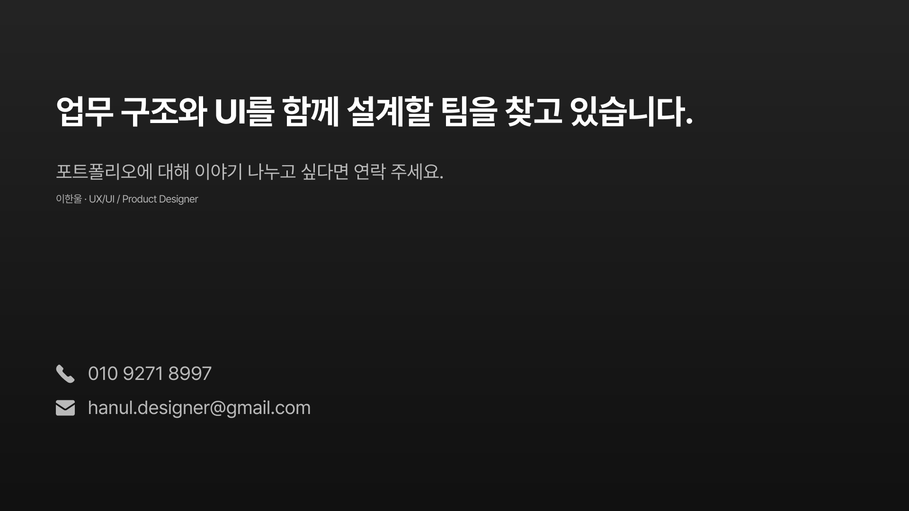
이메일·전화번호와 연락 문장이 완성됐고 웹 연락처와 일치합니다.